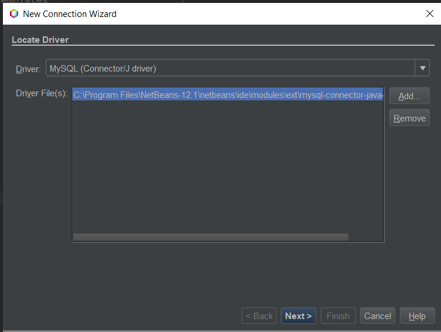
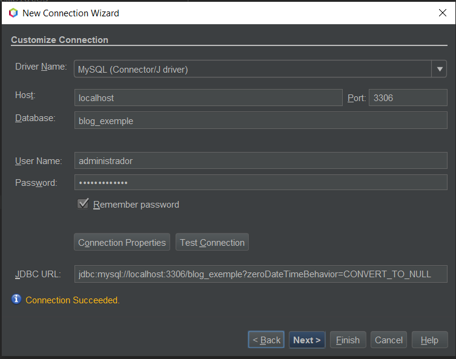
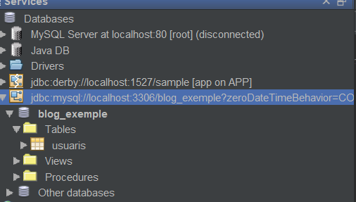

Obrirem Netbeans clicarem a Services → Databases Clicarem el botó dret i clicarem a New connection.

Seleccionarem un driver de qualsevol servidor de base de dades que tinguem instal·lat i clicarem a next.

Seleccionarem el servidor en el nostre cas localhost, el port en el nostre cas 3306, Database en el nostre cas blog_exemple, User name en el nostre cas administrador, password en el nostre cas administrador. Clicarem que recordi la contrasenya i farem un text de connexió. Clicarem a Finish.
Veurem la connexió de la base de dades i les taules.

A partir d'aquí ja la podrem manipular per exemple posant-nos a sobre una taula clicant amb el botó dret view data.